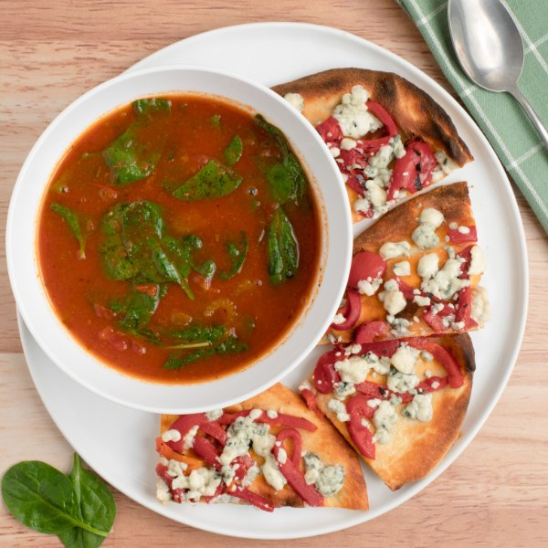

Indian Tomato-Spinach Soup with Blue Cheese & Roasted Red Pepper Naan

Total Time
30 min
Nutrition (Per Serving)
674.6 kcalCalories
25.9 gProtein
77 gCarbs
31.2 gFat
Full nutrition table
| Calories | 674.6 kcal |
| Total fat | 31.2 g |
| Saturated fat | 17.1 g |
| Trans fat | 0.9 g |
| Cholesterol | 68.7 mg |
| Sodium | 1516.5 mg |
| Carbohydrates | 77 g |
| Fiber | 6.5 g |
| Sugars | 6.4 g |
| Protein | 25.9 g |
| Potassium | 1432.3 mg |
| Calcium | 332.3 mg |
| Iron | 6.1 mg |
| Vitamin A | 1977.8 IU |
| Vitamin C | 37 mg |
| Vitamin D | 18.4 IU |
Cookware
Ingredients
- 1 (5 oz) pkgbaby spinach
- 4 stickscelery
- 32 fl ozchicken or vegetable broth
- 1 (4 oz) pkgcrumbled blue cheese
- 4flatbreads or naan
- 1 (24 oz) jarmarinara sauce
- 1 (12 oz) jarroasted red bell peppers
- butter, unsalted
- garam masala
- salt
Steps
- Preheat a large pot over medium heat.
- While the pot heats up, wash, dry, trim, and thinly slice celery crosswise.4 sticks celery
- Once the pot is hot, add butter and swirl to coat the bottom; add celery and cook, stirring occasionally, until softened, 2-3 minutes.4 tsp butter, unsalted
- Add broth, marinara, garam masala, and salt to the pot; stir to combine the soup and bring to a boil over medium-high heat. Once boiling, reduce heat to low and continue to cook, stirring occasionally, until flavors blend, 8-10 minutes.32 fl oz (4 cups) chicken or vegetable broth
1 (24 oz) jar marinara sauce
4 tsp garam masala
½ tsp salt - Meanwhile, preheat oven to broil on high and position rack under the broiler.
- Arrange naan on a large baking sheet pan; place in the oven and broil, flipping once, until golden brown and toasted, 1-2 minutes.4 flatbreads or naan
- While the naan is toasting, slice peppers into strips.1 (12 oz) jar roasted red bell peppers
- Remove naan from oven and top with sliced peppers and blue cheese.1 (4 oz) pkg crumbled blue cheese
- When the soup is almost done, return naan to the oven and broil until cheese is melted and warmed through, 1-2 minutes. Remove from oven and cut into quarters.
- When the soup is done, wash and dry the spinach (skip this step if it came pre-washed). Add spinach to the pot in handfuls, waiting for the spinach to wilt slightly before adding the next handful. Remove from heat.1 (5 oz) pkg baby spinach
- Divide soup between bowls and serve with naan on the side. Enjoy!